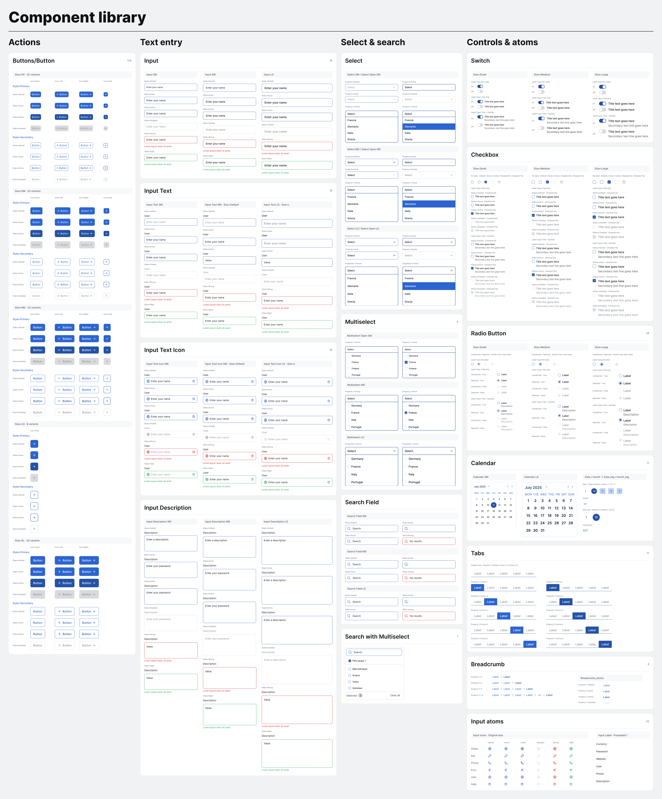

The problem
I was presented with the challenge of redesigning the job portal to improve user experience and modernize the interface. They wanted to attract more candidates and improve the overall user experience.
Goals
- Simplify job discovery
- Improve job card readability
- Modernise the visual design
- Improve candidate engagement
The current website
The current website had an outdated design and user interface. But I wanted to acknowledge what is already working. The page offers a good range of filters, functionalities, like saved jobs and alerts that provides additional value

Competitor analysis
The current website had an outdated design and user interface. But I wanted to acknowledge what is already working. The page offers a good range of filters, functionalities, like saved jobs and alerts that provides additional value
My approach
With only one week, I couldn't rethink the whole product. I focused on the three areas that most affect how quickly a candidate finds a relevant job: search and filters, the job card, and the visual layer that ties them together.
-
1. Simplify job discovery
Problem: The search field was easy to miss, the filters were deeply nested, and users couldn't see which criteria were currently applied.
Decision: I made the search field more prominent, simplified navigation inside the nested filters, and added visible active-filter chips that can be removed with one click.
Why it helps: Users can understand their current search at a glance and adjust it without digging through menus.
-
2. Redesign the job listing card
Problem: Cards were hard to scan, with no clear hierarchy to show users what mattered most.
Decision: I made the job title the primary focus, organized the information into a clearer hierarchy, and added a short summary, keywords, and the publication date.
Why it helps: Users can judge a job's relevance and freshness without opening the listing, so they can scan many results quickly.
-
3. Modernize the visual experience
Problem: The interface felt dated and inconsistent, and primary and secondary actions looked too similar.
Decision: I introduced a stronger typographic hierarchy, consistent spacing and alignment with intentional whitespace, higher contrast between primary and secondary buttons, a consistent icon set, and unified corner radii.
Why it helps: The interface feels more cohesive and trustworthy, and the main actions are easier to spot.

Outcome
The result is a single wireframe that shows improved the overall user experience.
This
Figma File
Learnings
This was a small project that taught me the importance of user-centered design and the value of data-driven decisions. I didn't have much time to make extensive changes, but I was able to implement key improvements that enhanced the user experience. But if I had more time, I would have liked to explore a full redesign not just a facelift.